Galéria
Szalagavató
Pillanatok a bálról: keringő, tűzés, csoportképek.
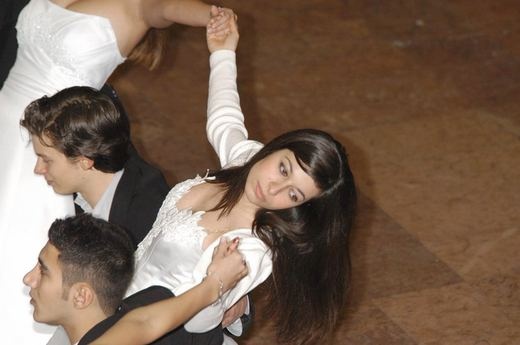
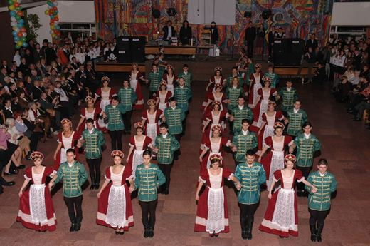
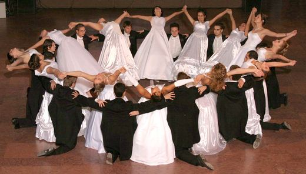
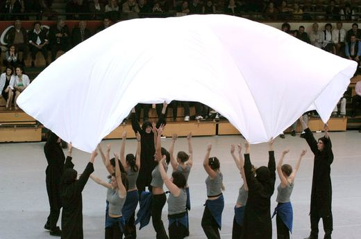
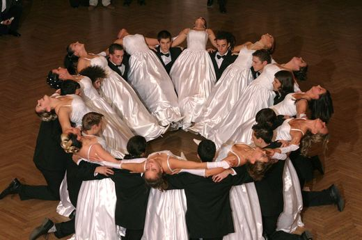
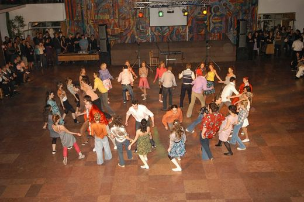
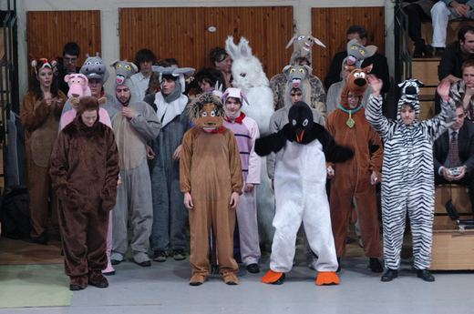
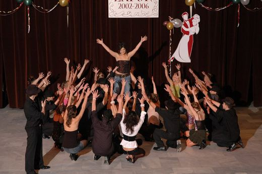
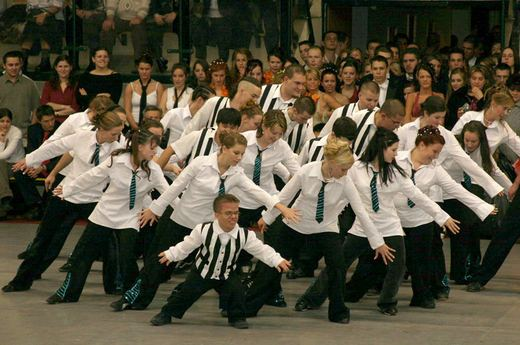
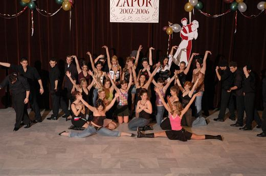
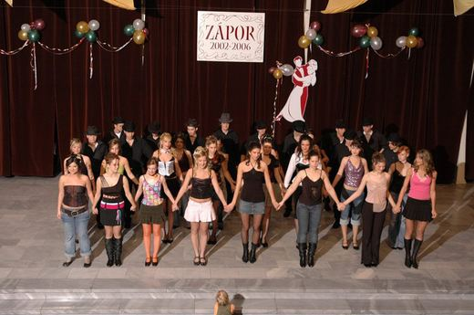
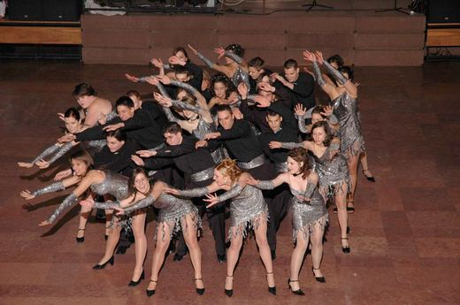
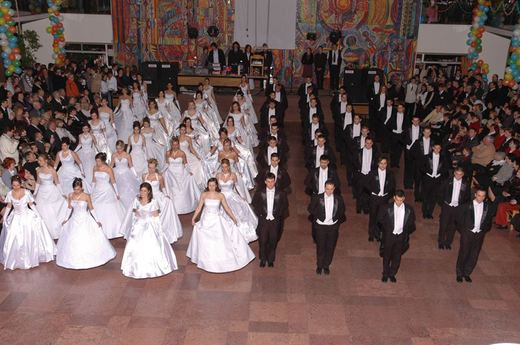
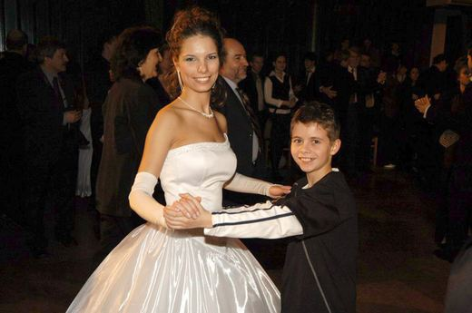
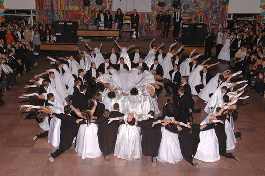
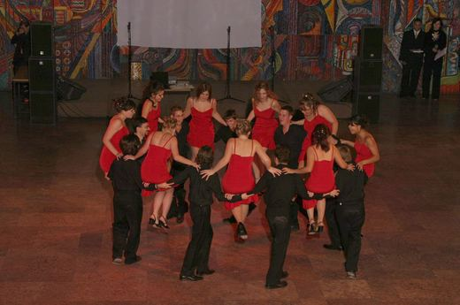
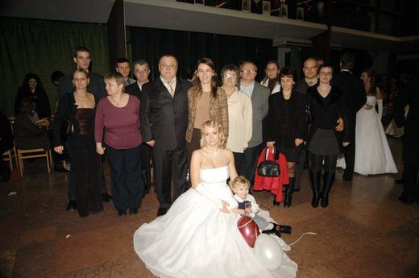
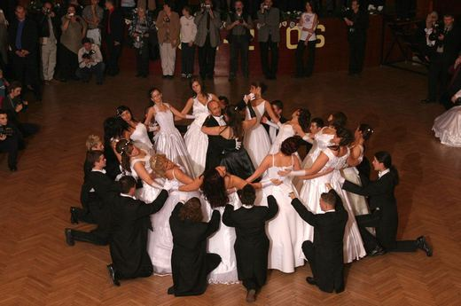
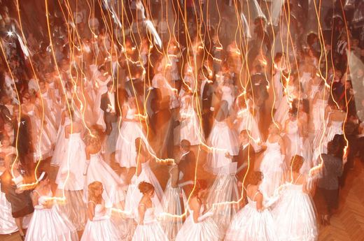
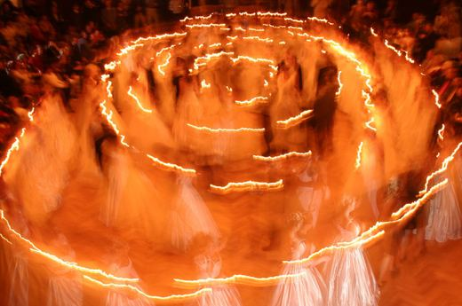
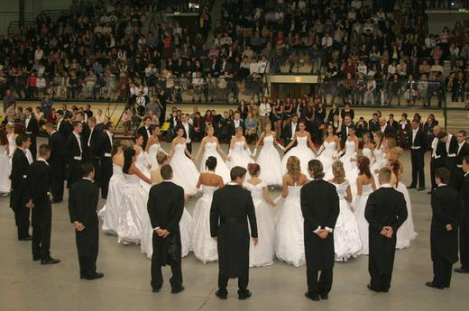
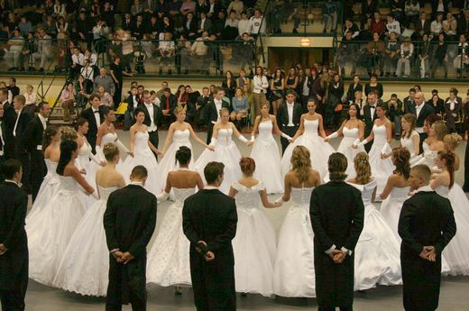
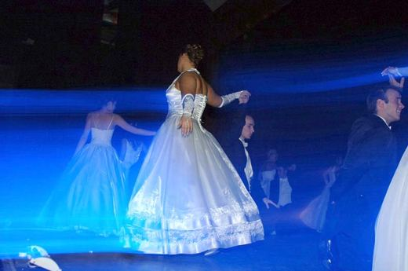
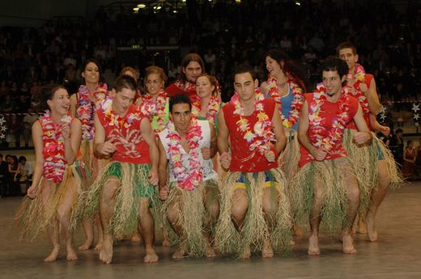
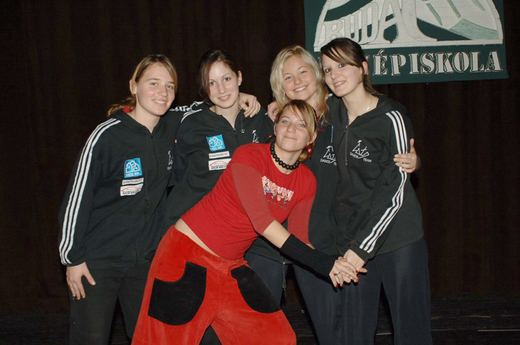
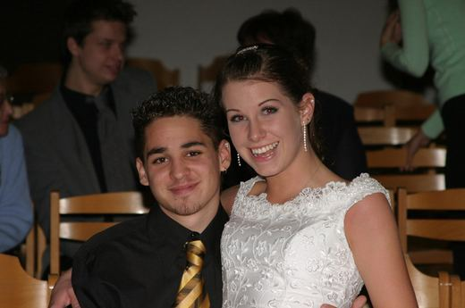
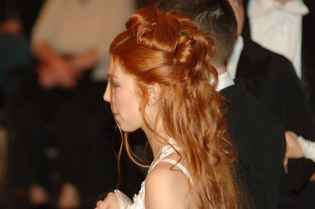
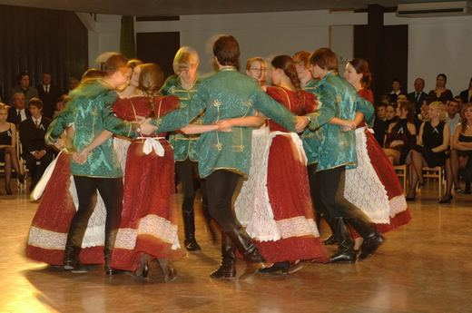
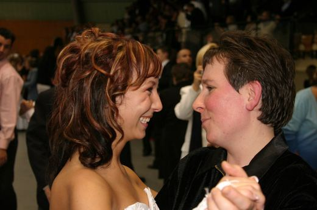
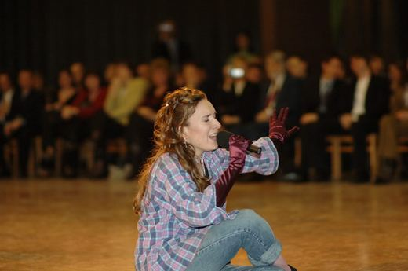
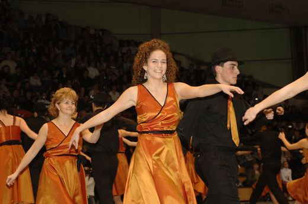
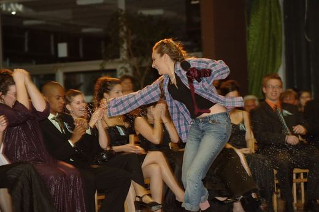
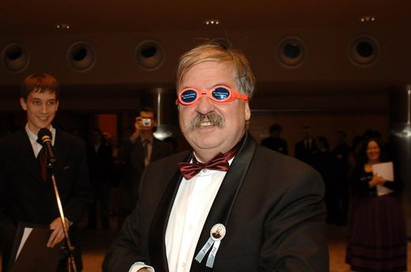
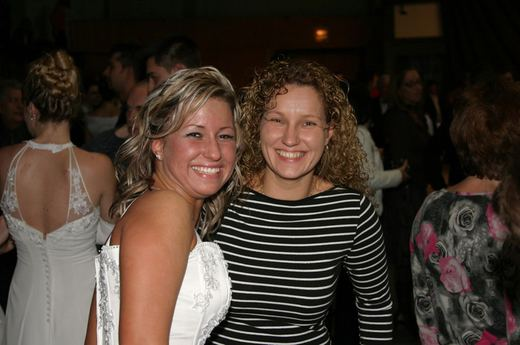
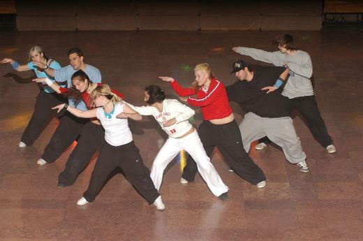
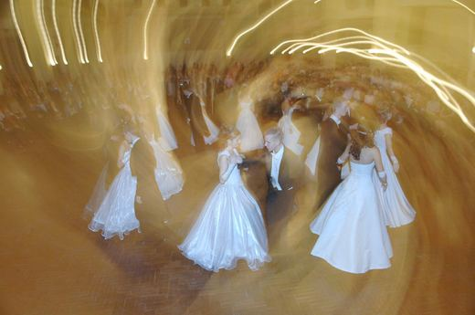
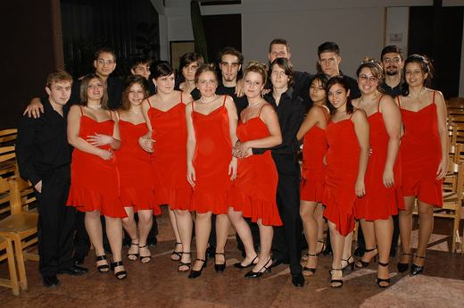
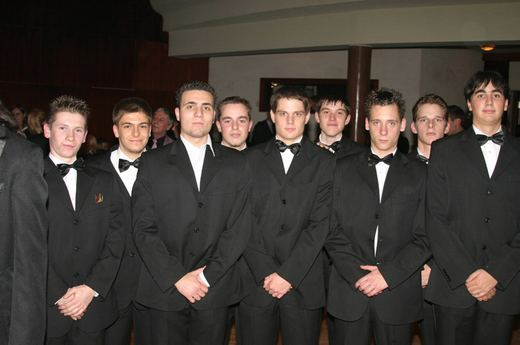
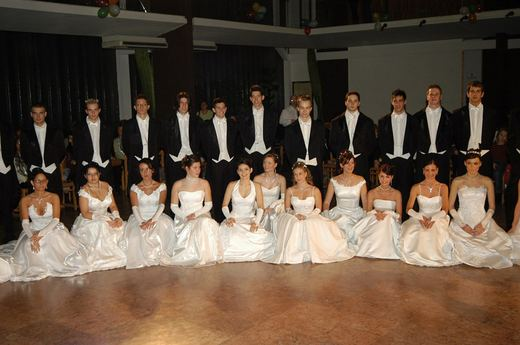
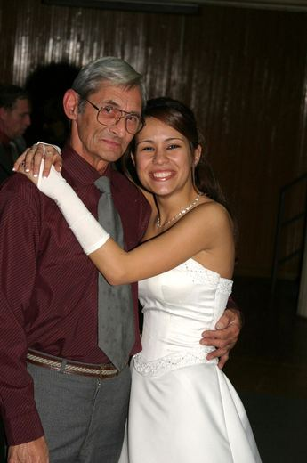
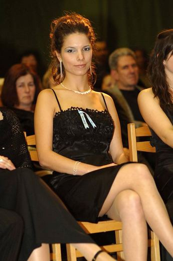
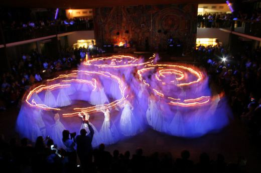
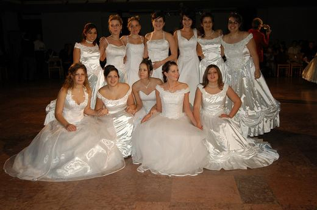
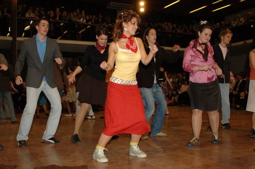
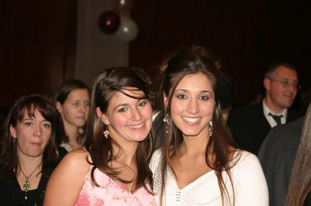
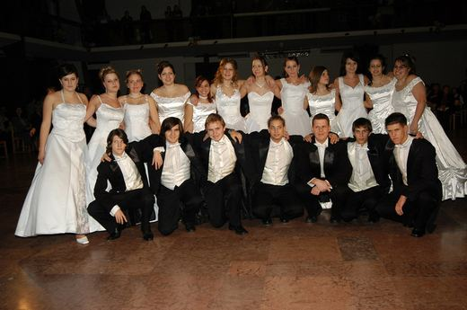
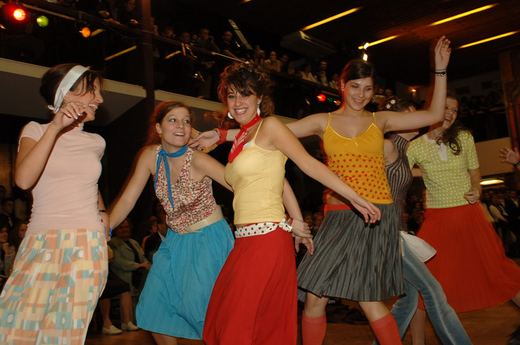
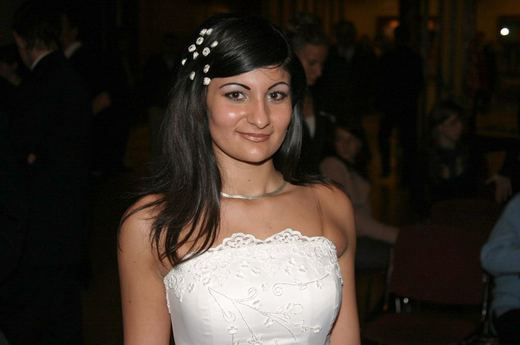
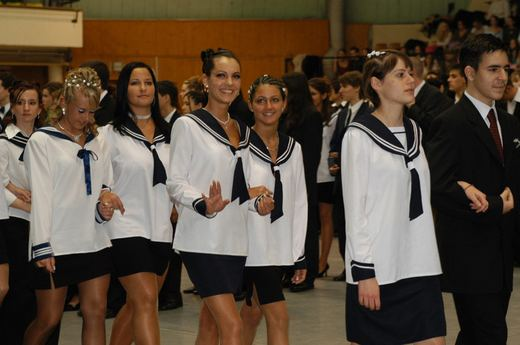
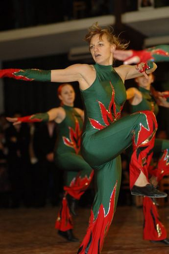


Beszéljük meg!
Hívj minket, vagy írj egy e-mailt – szívesen segítünk megtervezni a fotózást.